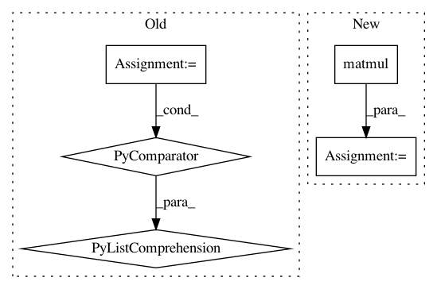

d1ac7b831ad36cd0e4bdd7980819f83208345148,gpflow/expectations.py,,_expectation,#Any#Any#Any#Any#Any#,560
Before Change
message="Product currently only supports diagonal Xcov.", name="assert_Xcov_diag"),
]):
_expectation_fn = lambda k: _expectation(p, k, feat, k, feat)
return functools.reduce(tf.multiply, [_expectation_fn(k) for k in kern.kern_list])
@dispatch(DiagonalGaussian, object, (InducingFeature, type(None)), object, (InducingFeature, type(None)))
After Change
with params_as_tensors_for(mean1), params_as_tensors_for(mean2):
N = tf.shape(p.mu)[0]
e_xxt = p.cov + (p.mu[:, :, None] * p.mu[:, None, :]) // NxDxD
e_xxt_A = tf.matmul(e_xxt, tf.tile(mean2.A[None, ...], (N, 1, 1))) // NxDxQ
e_x_bt = p.mu[:, :, None] * mean2.b[None, None, :] // NxDxQ
return e_xxt_A + e_x_bt
In pattern: SUPERPATTERN
Frequency: 3
Non-data size: 5
Instances
Project Name: GPflow/GPflow
Commit Name: d1ac7b831ad36cd0e4bdd7980819f83208345148
Time: 2018-02-07
Author: alex.ialongo@gmail.com
File Name: gpflow/expectations.py
Class Name:
Method Name: _expectation
Project Name: cornellius-gp/gpytorch
Commit Name: e8a945606e0b3dafe71ce2f1bf1b52ab3b05428c
Time: 2021-02-10
Author: wjm363@nyu.edu
File Name: gpytorch/lazy/kronecker_product_added_diag_lazy_tensor.py
Class Name: KroneckerProductAddedDiagLazyTensor
Method Name: _solve
Project Name: cornellius-gp/gpytorch
Commit Name: a7a12d157766b69cf4b1ddbb5fcdacfe485dc6fa
Time: 2019-04-03
Author: gpleiss@gmail.com
File Name: test/kernels/test_linear_kernel.py
Class Name: TestLinearKernel
Method Name: test_computes_linear_function_square_batch